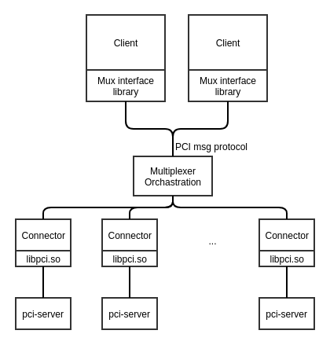

The PCI multiplexer (mux) provides a method for applications to access pci-server and allows single clients to access multiple pci-server instances in a hierarchy and partitioning case.
The PCI multiplexer introduces a multiplexing layer on top of the existing libpci.so. A central multiplexer handles the routing of all client communications and manages the life cycle of connectors. Only clients can communicate with the multiplexer. It then forwards the client requests to connectors. The multiplexer spawns and manages connectors, where each connector loads libpci.so and connects to one pci-server instance.

When QVM uses the PCI multiplexer system, you must instruct the pci-server to load the pci_server-qvm_support.so module at startup. Refer to The pci_server-qvm_support.so module for instructions on how to do so.